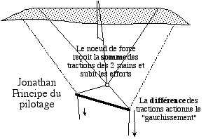
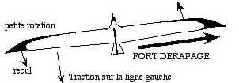

| Accueil | Motivations | Premiers Cerfs-volants | Cerfs-volants récents | P |

Mais j'ai rapidement voulu créer quelque chose de plus élancé, et la forme des oiseaux s'imposait. J'ai donc commencé à concevoir et réaliser des oiseaux pilotables (2 lignes) comme Jonathan (1994), le King, la Mouette. Cela n'a pas été simple, le bridage pour faire tourner étant basé sur la déformation de la machine !
J'ai alors voulu faire plus grand (3 m d'envergure), mais la pilotabilité devenait pratiquement impossible, l'aile "gauchie" reculant et arrêtant le déplacement, et le dérapage devenant plus important que la rotation.